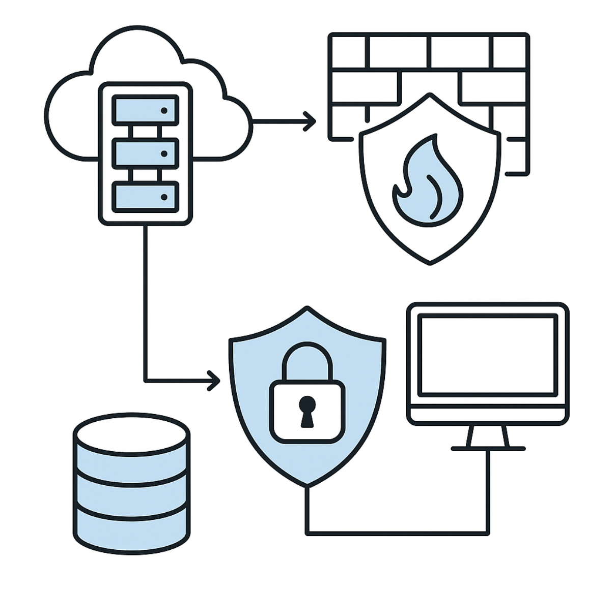

Mise en place d’un SIEM avec Wazuh
Supervision sécurité centralisée et détection d’incidents
Contexte
Dans une démarche de cybersécurité, j’ai déployé Wazuh pour centraliser la collecte des logs, améliorer la visibilité sur les événements de sécurité et accélérer la détection d’activités suspectes.
Objectifs
- Centraliser les journaux systèmes et sécurité des équipements.
- Détecter les comportements anormaux et les tentatives d’intrusion.
- Mettre en place des alertes exploitables pour l’administration.
Architecture et mise en œuvre
- Installation du serveur Wazuh (manager + dashboard).
- Déploiement des agents sur les machines à superviser.
- Configuration des règles, seuils et tableaux de bord.
- Collecte et corrélation des événements (authentification, réseau, système).
- Validation via des scénarios de test pour vérifier la remontée d’alertes.
Résultats / Bilan
La solution SIEM a permis d’améliorer la surveillance de l’infrastructure et la réactivité face aux incidents. Ce projet m’a apporté des compétences concrètes en supervision sécurité, analyse de logs et gestion d’alertes.